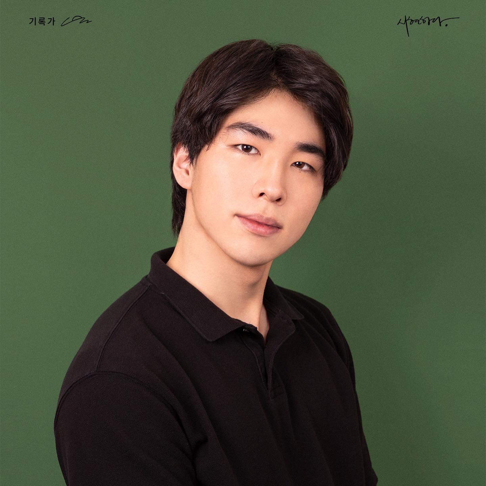
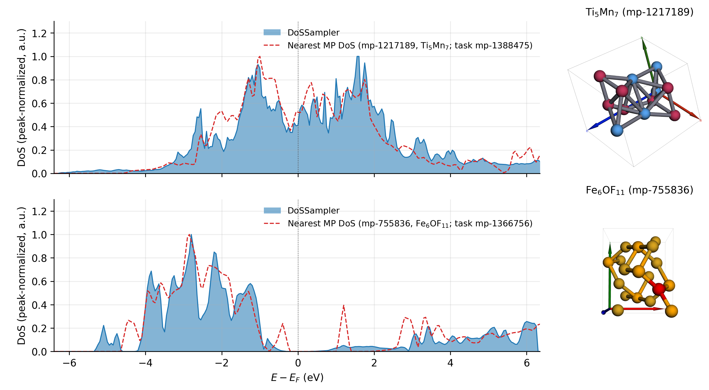
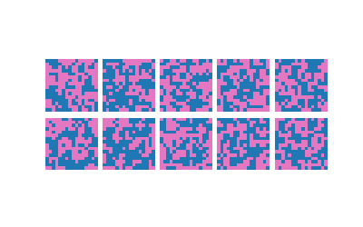

|
Sujong Lee I'm a first year Ph.D. student (NPGS Scholar) at NTU CCDS, advised by Prof. Atsushi Nitanda. Previously, I received B.Eng. in NTU majoring in EEE with minor in mathematics. I was also a researcher at Nanoforge AI. I am broadly interested in probabilistic machine learning, including generative model and sampling methods. Email / CV / Google Scholar / Github / LinkedIn |
 |
{kind=link}
Research Interests |
|
Generative Modeling: Investigating the theoretical foundations and efficiency of Diffusion Models, Flow Models, and their connection to Optimal Transport and Stochastic Control. Neural Samplers: Developing advanced sampling techniques, particularly Monte Carlo Methods and their Neural Sampler approaches. AI4Science: Applying machine learning to Materials Discovery, including research on the application of neural samplers to facilitate scientific innovation, especially on Materials. |
Publications (* denote equal contribution) |
|
 |
Density of States-Intermediated Crystal Generation for Material Inverse Design
Sujong Lee*, J. Bae*, S. Shin*, H. Choi, C. Park AI4Science@ICML, 2026 |
|
 |
Neural Discrete Controlled Monte Carlo Samplers
Sujong Lee, P. Jutras-Dubé, B. Wen, R. Zhang ProbML, 2026 |
Experiences |
|
AI Researcher Intern
NanoforgeAI, Korea Oct 2025 - May 2026 |
|
|
|
Research Intern
Purdue University (Remote) Jun 2025 - May 2026 Supervisor: Ruqi Zhang |
|
Research Intern
ROSE Lab @ NTU, Singapore Jan 2025 - May 2025 Supervisor: Bihan Wen |
|
Website template from Jon Barron. |